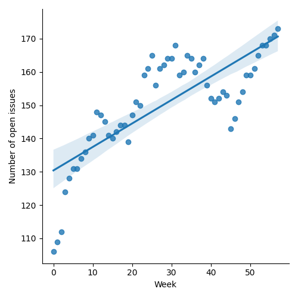
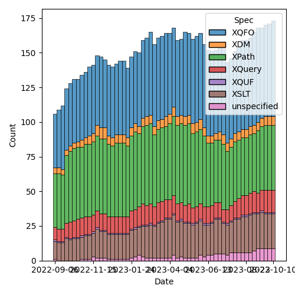
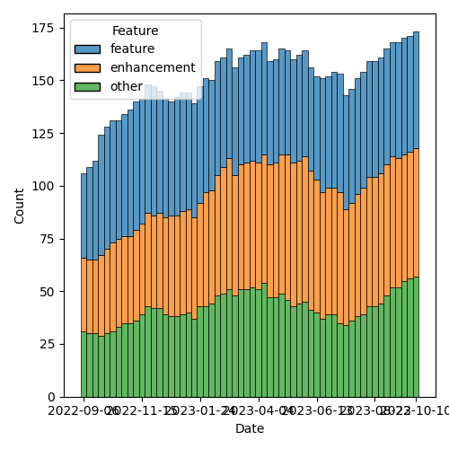

QT4 CG Meeting 050 Minutes 2023-10-17
Table of Contents
- Draft Minutes
- Summary of new and continuing actions
[0/7] - 1. Administrivia
- 2. Technical Agenda
- 3. Any other business?
- 4. Adjourned
Agenda index / QT4CG.org / Dashboard / GH Issues / GH Pull Requests
Draft Minutes
Summary of new and continuing actions [0/7]
[ ]QT4CG-046-01: MK to continue the work on #129 for the other specs (we accepted #703)[ ]QT4CG-046-04: CG to flesh out changes related to annotations in other parts of the specs[ ]QT4CG-046-05: NW to updated parse-uri to use decode-from-uri (issue #566)[ ]QT4CG-048-02: MK to clean up the proposal for adding @as to xsl:sequence and elsewhere[ ]QT4CG-050-02: MP to attempt to summarize this discussion and identify specific issues[ ]QT4CG-050-01: MK to revise #749 to retain only the editorial parts.[ ]QT4CG-050-03: MK to make the proposed editorial improvements to PR #659
1. Administrivia
1.1. Roll call [9/12]
Regrets EP, JL.
[X]Reece Dunn (RD)[X]Sasha Firsov (SF)[X]Christian Grün (CG)[ ]Joel Kalvesmaki (JK) [:15-][X]Michael Kay (MK)[ ]John Lumley (JL)[X]Dimitre Novatchev (DN)[X]Wendell Piez (WP)[X]Matt Patterson (MP)[ ]Ed Porter (EP)[X]C. M. Sperberg-McQueen (MSM)[X]Norm Tovey-Walsh (NW). Scribe. Chair.
1.2. Accept the agenda
Proposal: Accept the agenda.
Accepted.
1.2.1. Status so far…

Figure 1: “Burn down” chart on open issues

Figure 2: Open issues by specification

Figure 3: Open issues by type
1.3. Approve minutes of the previous meeting
Proposal: Accept the minutes of the previous meeting.
Accepted.
1.4. Next meeting
The next meeting is scheduled for Tuesday, 24 October 2023.
No regrets heard.
1.5. Review of open action items [4/8]
[X]QT4CG-045-02: RD to address comments on HTML namespaces in another PR[ ]QT4CG-046-01: MK to continue the work on #129 for the other specs (we accepted #703)[ ]QT4CG-046-04: CG to flesh out changes related to annotations in other parts of the specs[ ]QT4CG-046-05: NW to updated parse-uri to use decode-from-uri (issue #566)[X]QT4CG-048-01: MK - to identify what happens with the mode default rule behaviours.[ ]QT4CG-048-02: MK to clean up the proposal for adding @as to xsl:sequence and elsewhere[X]QT4CG-049-01: MK to make sure CastTarget is defined locally[X]QT4CG-049-02: NW to sort out what has made the dashboard so unwieldy
1.6. Review of open pull requests and issues
1.6.1. Blocked
The following PRs are open but have merge conflicts or comments which suggest they aren’t ready for action.
- PR #538: 480: Attempt to allow xs:string to be 'promoted to' xs:anyURI
1.6.2. Merge without discussion
The following PRs are editorial, small, or otherwise appeared to be uncontroversial when the agenda was prepared. The chairs propose that these can be merged without discussion. If you think discussion is necessary, please say so.
- #752 Fix "for member" grammar problems
- #751 See ACTION QT4CG-048-01: xsl:mode/@as with built-in templates
- #744 XQFO Examples: minor fixes, formatting
- #741 Fix copy and paste errors in describing type patterns
- #740 Rename break-when to split-when, plus minor editorial cleanup
- #739 Apply review comment changes to the HTML DOM XDM mapping.
Agreed.
NW and JK request discussion of #749.
- #749 Add string literals E".." and L".." to control entity expansion
1.6.3. Close without action
It has been proposed that the following issues be closed without action. If you think discussion is necessary, please say so.
None this week.
1.6.4. XSLT focused
The following PRs appear to be candidates for a future XSLT-focussed meeting.
These issues identify the XSLT-focused changes that have been made to the specifications but which have not been established by the community group as the status quo.
1.6.5. Substantive PRs
The following substantive PRs were open when this agenda was prepared.
- PR #737: 295 Boost the capability of recursive record types
- PR #736: 730: Clarify (and correct) rules for maps as instances of function types
- PR #734: 517: fn:chain
- PR #719: 413: Spec for CSV-related functions
- PR #659: 647: schema location hints
- PR #635: 451: Schema compatibility
- PR #529: 528: revision of json(), and renaming to elements-to-maps()
1.6.6. Proposed for V4.0
2. Technical Agenda
2.1. PR #719: 413: Spec for CSV-related functions
See PR #719.
Status update with MP. Short discussion of recent comments about functions.
- MP: I think CG is identifying another issue which is the kinds of
functions we add. There are three functions proposed for reading CSV
data. CG’s suggestion is that maybe we can combine them into one by
having an option that selects the behavior.
- … Having three functions is annoying because we have a global function namespace and lots of functions.
- (CG nods)
- … The question is how to find that balance between more discrete functions vs. functions with different behaviors.
- … I suspect that if we go make the function do lots of things, that will have implications for how we approach future stuff.
- CG: I think that’s a good summary of my feedback. In another issue, I observed that we have many different parsing functions that work in different ways. It would be good for users if we unify them. parse-xml, parse-json, parse-html, parse-csv, etc. We could have html-doc and csv-doc. We have doc. It would be nice if the CSV functions could be unified as well.
- RD: With the CSV there are effectively two main models: one that is
returning either a map or an array, and another that is returning
XML data. I could see those being two different functions, similar
to parse-json and json-to-xml. Whether we need one function that
parses a CSV to an array and another to a map: I don’t know. We
could create functions that convert between the map/array models.
- … Then we can compose the functions. This would be useful outside of CSV.
- … For fetch-by-column, that’s really encapsulating an XPath expression so I’m not sure what value specifically that’s adding over doing the parse and binding it to a path expression.
- MP: It’s more complicated than JSON parsing because there is a JSON
grammar and one true way of parsing it. That’s not true of the CSV
stuff. There are two main rich representations: one is the XDM
representation, a map with sub-maps, and the other is a sequence of arrays.
- … The sequence-of-arrays model is the most basic kind of parsing you can do on something that claims to be a CSV. It doesn’t do any fancy stuff. To do anything less dumb than that requires the CSV to actually be structured in the way you expect and that’s not always true.
- … The common case is that the data is tabular, but if you have something that’s weirder, and you can get considerably stranger, (I’ve seen multiple CSVs separated by blank columns). I don’t want to have to start implementing all of the weirdness in the core language. If we give people just enough to handle string quoting and delimiter variation, that’s the simplest thing. That’s why there are three functions. The other two functions are for dealing with the stuff that’s conventionally tabular.
- RD: You could make the CSV to XDM take the sequence of arrays of strings rather than CSV data directly.
- MP: You could, and basically that’s what it does behind the scenes.
It wasn’t done that way to avoid all the nested function calls. Most
people will just need the output from the simpler functions. Users
shouldn’t have to know about the composition.
- … parse-csv is not the best name. We can still change it to reflect the fact that it’s the underlying function in case you have odd data.
- … If you want to have csv-to-xdm that has an option to return either of those representations, we might as well go all the way and let the function return XML.
- … If it’s a swiss army knife, we should just go that way.
- DN: I welcome MP’s concern about over populating the function namespace. And I also agree with him that I don’t want to have a single function that does many different things. The demo I gave last week offers a solution for this problem: letting users provide different XPath function libraries. Function libraries also solve the problem that the namespace isn’t hierarchical. Many libraries can import more general libraries and just when we’re talking about this, we shouldn’t forget this capability.
- CG: Maybe we should consider just how important it is to be able to parse really complex CSV files. I’ve often had to pre-process such complicated files and make them more tabular. How far can we get?
- MP: The whole point of this approach is that we don’t try to do that. The output of parse-csv is extremely stupid intentionally. It can be used to build more process processing on top of that.
- CG: But the non-relevant sections can also have delimiters and quotes and such that can confuse the parser.
- MP: I’ve looked at this and the comments are the big one, and if you
look at the RFCs, those things are delimiters but they’re at the
beginning of a line. There’s an argument to be made that we should
deal with the comment syntax because it’s in some of the standards
for CSVs.
- … But I’m not sure what else there is that doesn’t have to play by the existing rules.
- RD: As an alternative, would it be useful to have a parse-csv-lines
function that just does the row parsing and then have a
parse-csv-columns that does the column parsing?
- … So then you could do the manual filtering and checking and extract the rows as needed.
- CG: The problem is that some rows can cross multiple lines.
- MP: I think we should probably summarize this. I’ll go through the notes and write up something that separates out the threads.
ACTION QT4CG-050-02: MP to attempt to summarize this discussion and identify specific issues
- MP: FYI: I’m pretty far along in the implementation and nothing about this discussion causes me any real heartburn.
2.2. PR #749: Add string literals E".." and L".." to control entity expansion
See PR #749.
- MK: The issue that comes up from time-to-time is that XQuery and
XPath have different rules about whether or not entities are
expanded.
- … The proposal (by Benito van der Zander) is to allow E and L prefixes in both languages without changing the defaults.
- … Alternatively, just use backticks?
- RD: I think I proposed something similar…in issue #58
- … that became the backtick syntax
- NW: What about the Q"…" syntax proposed for QNames
- MK: I think they’re independent.
- CG: The question is which users do we want to address; most people seem to find the backtick syntax confusing. If you know the language well, then E/T/Q etc is fine but it may be confusing.
- WP: Is it bad to have both?
- NW: We’re not proposing to remove backtick
Straw poll: none in favor, ½ a vote in opposition.
- MK: We should only change the spec if there’s enthusiastic support.
Proposal: PR #749 is rejected.
Accepted.
- MK: I’ll revise PR #749 to make it purely editorial and explain the problem.
ACTION QT4CG-050-01: MK to revise #749 to retain only the editorial parts.
2.3. PR #659: 647: schema location hints
See PR #659.
- MK: This is XQuery only. It attempts to describe some conventions
for how to deal with schema location hints, to make them more
interoperable and understandable.
- … There are a few asides in here: what you should do about importing the XML namespace.
MK summarizes the new text…
- MK: This proposal integrates the feedback from our last discussion.
- MSM: I think I understand your description, try these until you find
one that dereferences, and use it if you can parse it but raise an
error if you can’t.
- … Could it be made more explicit in item 3 that the process stops after a schema is successfully located.
- MK: I can do that.
- MSM: There’s one other thing; I apologize that this is going to feel
like a tooth-ache from long ago.
- … Rule 6 implies that you can’t have conflicting definitions of the same type name. This implicitly suggests that you can have the same type name defined in the two sources that you’re merging as long as it’s “the same type”.
- … The XSD WG never succeeded in defining identity of types, nor did they remove referneces to identity of types. Can we do more than hope?
- MK: XSLT says that import schema is equivalent to XSD having multiple imports.
- RD: Could you potentially get into that situation if you import a schema that imports the XS schema, so you have the XS types defined in the XML schema and the built in ones. Or if you have two different schemas that say import an HTML schema or …
- MK: You can get into all sorts of situations. It happens quite
frequently that users attempt to import an XLink schema that’s a
little different from the standard.
- … This is all at the level of “recommendation” so it’s up to implementations to sort it out.
- MP: This is slightly pedandtic, but what does “successfully dereferenced” mean?
- MK: It means you get a resource back. It doesn’t have to be HTTP of course.
- MP: My question really was then, say it’s an HTTP URI and you get a 502 or 503, so you get something that definitely isn’t an XSD. Is that a successful dereference?
- MK: We’ve never been prescriptive at that kind of level.
- MP: Is it worth mentioning that implementations may differ on that basis?
- MK: Maybe. I think the general flavor is right here.
- MSM: I think the fact that this is couched as a should not a must helps, but I think MP’s suggestion is a good one. Grasp the nettle and have a note that says following the conventions of XSD, implementations may vary in what they regard as successful dereferencing and what constitutes type definitions that are different or the same.
- RD: Implementations would differ in behavior. For example, whether they support the jar: scheme or a resource resolver.
- MK: The dereferencing algorithm will differ. That process will give differences based on all of the infrastructure stack.
- DN: To what MP asked, I think this is an excellent question. What is successful is an important question. If I’m a tester and I want to get an error, I might consider 403 a success.
Proposal: Accept this PR?
Accepted.
ACTION QT4CG-050-03: MK to make the proposed editorial improvements to PR #659
The expectation is that next week, #659 will be on the “merge without discussion” list.
3. Any other business?
None heard.